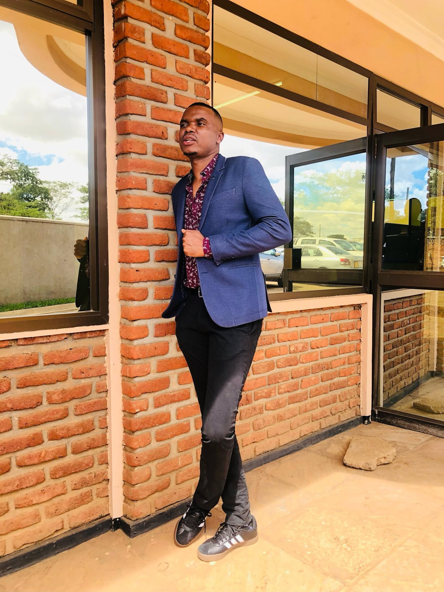

Growing agriculture through passion, innovation and sustainability.

Mkanga-Ulimi Farm was founded with a vision of building a modern, sustainable agricultural enterprise that contributes to food security, economic growth and community development in Malawi.
Driven by passion for agriculture, the founder believes farming is more than a source of income — it is a foundation for creating opportunities, empowering communities and inspiring future generations.
The farm continues to grow through crop production, livestock farming and responsible agricultural practices.
The journey started with a small piece of land and a dream of transforming agriculture.
Our first crops marked the beginning of a sustainable farming journey.
We expanded into livestock farming with improved practices.
Supporting young people and local communities.
Building a better future through sustainable agriculture.
To become a leading agricultural enterprise in Malawi recognised for sustainable production, innovation and community impact.
To produce high-quality crops and livestock products through sustainable farming practices while empowering communities.
We exist to address food security, reduce unemployment and promote sustainable agriculture that benefits current and future generations.